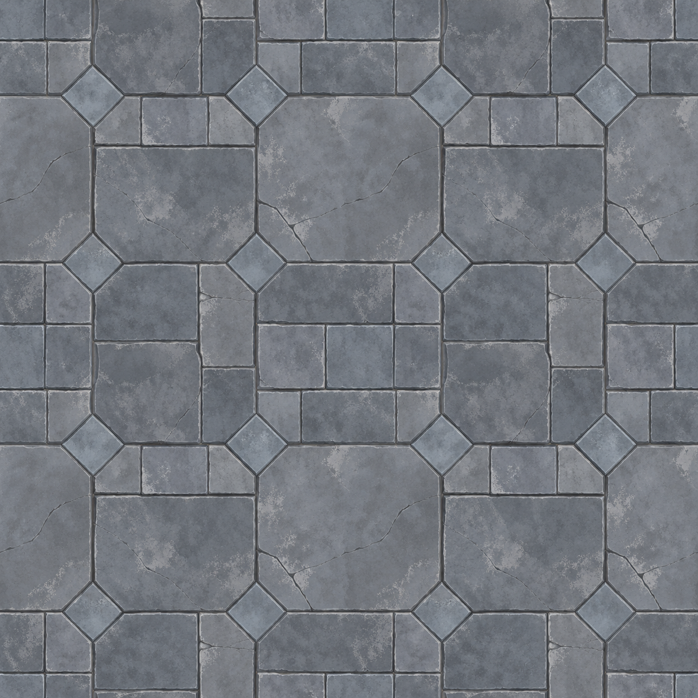
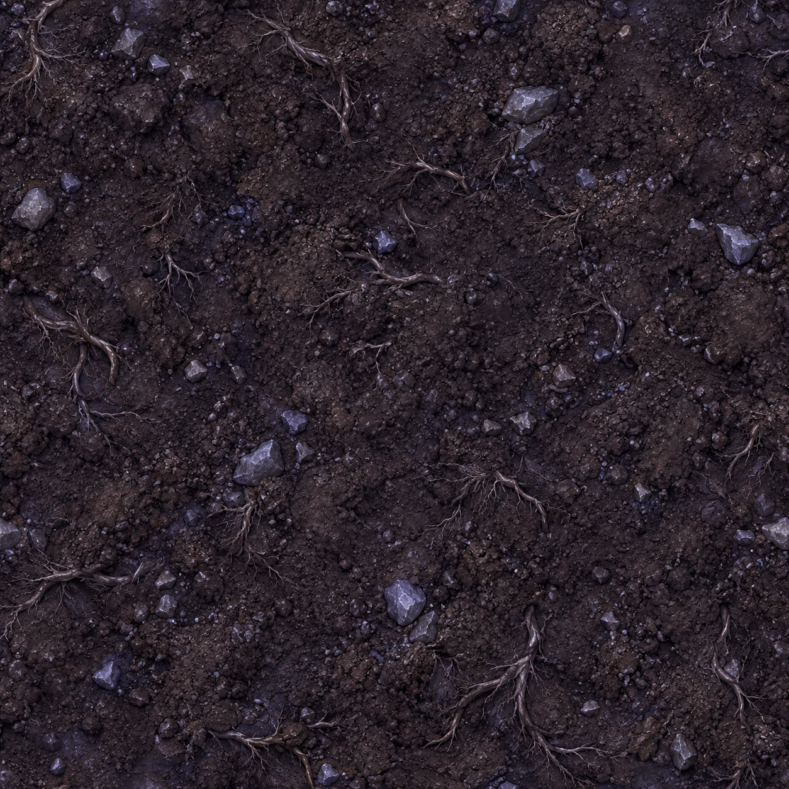
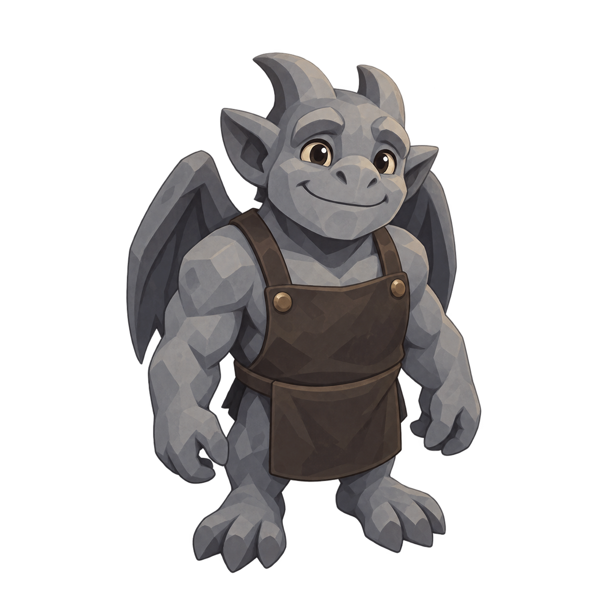
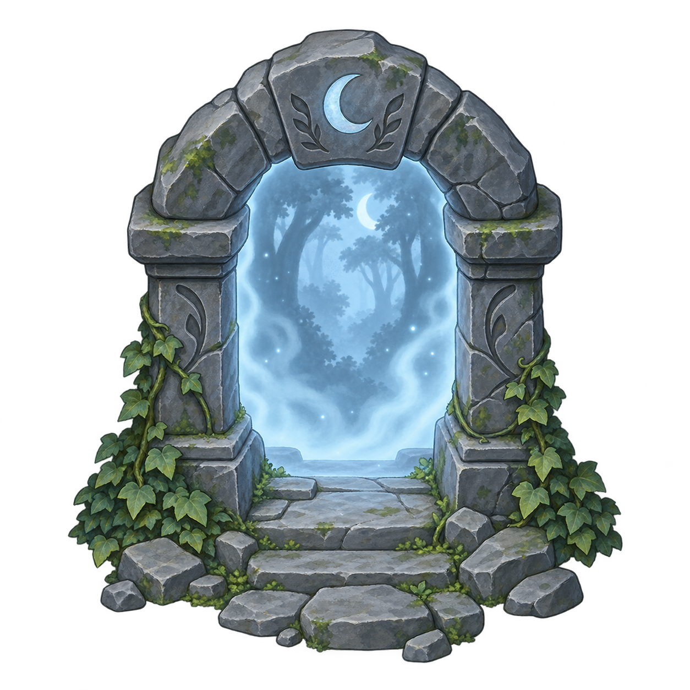
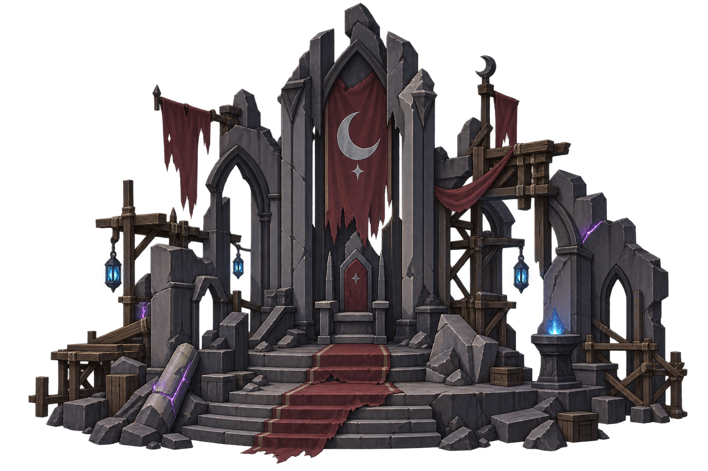
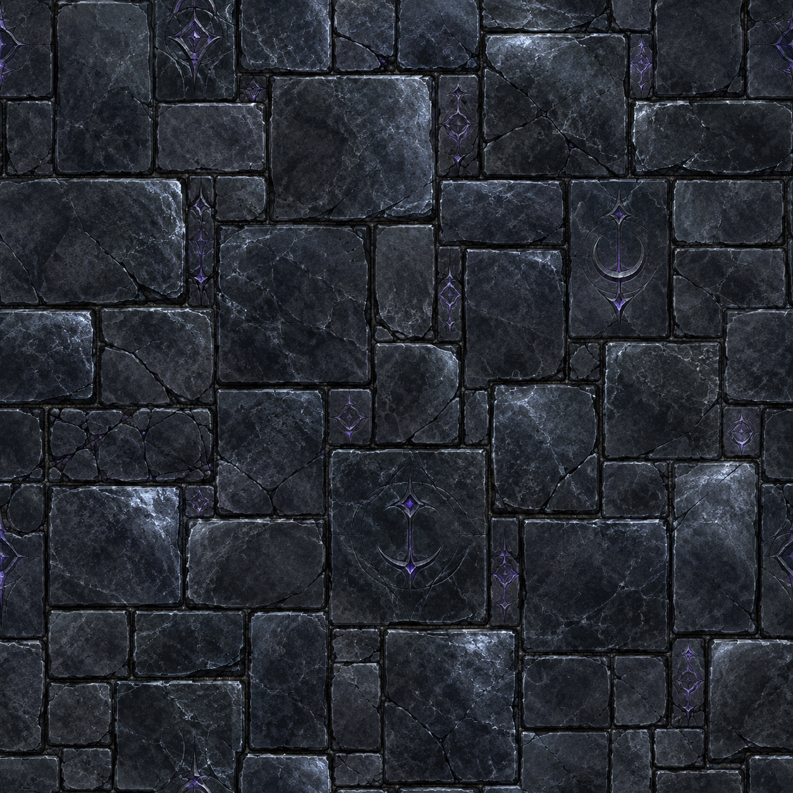

已锁定方向：三头身、小地图角色、普通 2D 插画、清晰轮廓与低细节密度。推荐地面改为冷灰石材；紫色只用于角色服装、魔法和少数城堡重点。所有条目仍是候选，尚未登记或接入正式游戏。

中性石青/冷灰，与紫色角色、建筑和魔法分层。

后续仍需生成翻土、浇水、成熟作物等状态素材。
三头身地图行动比例；不持锤子、木头或武器。

沿用紧凑三头身与清晰剪影。

以藤蔓石拱与蓝色森林开口明示目的地，不再使用占位传送门。

以中性炭灰石材、暗红旗帜和冷蓝灯火表达“待修复”的核心建筑。

色相与角色、建筑、魔法冲突，不推荐进入正式游戏。